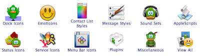

Adium Xtras
Adium Xtras add new sounds, images, and more to Adium, allowing you to fully customize your Adium experience.
Installing Adium Xtras
To install an Xtra from the AdiumXtras website, click the install link on the Xtra's webpage. To install an Xtra that you have already downloaded, simply doubleclick it. In either case, Adium will launch and put the Xtra into the correct place for you.
Finding an installed Xtra
Xtras are stored in subfolders of this folder: (Your Home Folder)/Library/Application Support/Adium 2.0. Each folder contains a different type of Xtra. (The "Library" folder is hidden in OS X versions 10.7 and newer. See this article for details.)

- Contact List - Contact list layouts and themes (.ListLayout, .ListTheme)
- Dock Icons - Dock-icon packs (.AdiumIcon)
- Emoticons - Emoticon packs (.AdiumEmoticonSet)
- Menu Bar Icons - Menu bar icon packs (.AdiumMenuBarIcon)
- Message Styles - Message styles (.AdiumMessageStyle)
- PlugIns - Plugins (.AdiumPlugin)
- Scripts - Scripts (.AdiumScript)
- Service Icons - Service icon packs (.AdiumServiceIcon)
- Sounds - Sound packs (.AdiumSoundSet)
- Status Icons - Status icon packs (.AdiumStatusIcon)
- ...and more
The "Users" folder, also at this location, contains your preferences and message history (see Locations of Adium files).
Removing Adium Xtras
To remove an Xtra:
- Open the Xtras Manager from the Adium menu.
- Navigate to the correct category.
- Select the Xtra you wish to remove.
- Click the Delete button to remove the Xtra.
Getting support for an Xtra
An Xtra installed from the Adium Xtras site is supported by the Xtra's author. The first place to seek support is on the Xtra's page, probably in the comments unless the author has given other instructions. If that doesn't work, try the Adium forum.
Creating an Xtra
Start by looking at the Creating Xtras page.